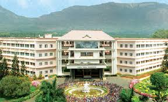

Amrita University's Coimbatore campus started in a hidden village named Ettimadai provides over 120 UG, PG and doctoral programs to a student population of over 12,000 and faculty strength of nearly 1500.
Contact Us:
Email:info@coi.amrita.edu
Phone: +91 4228439565
